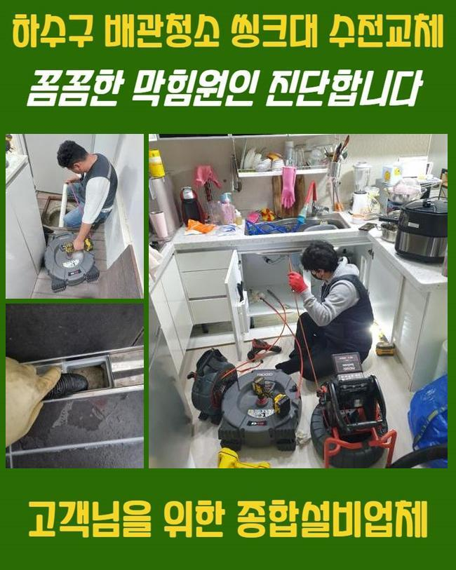
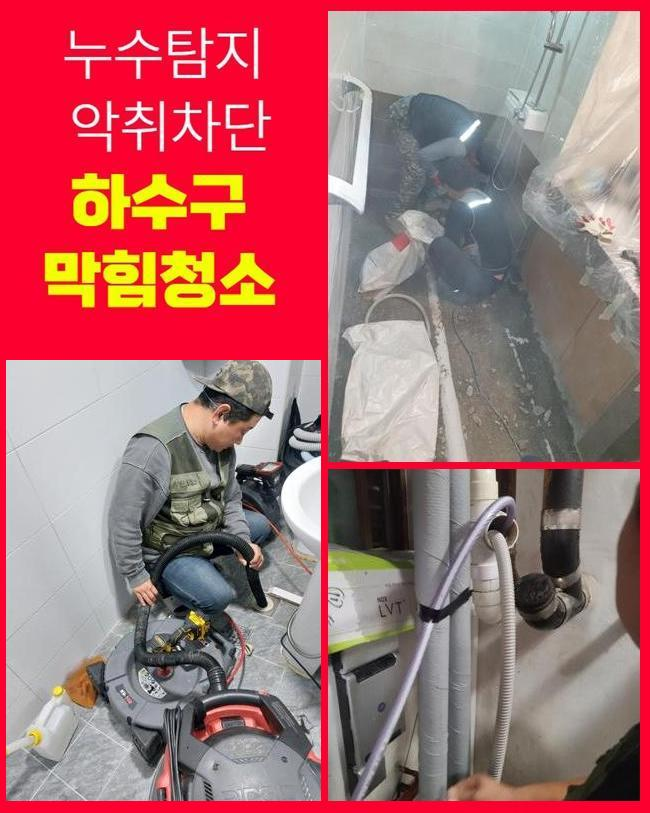
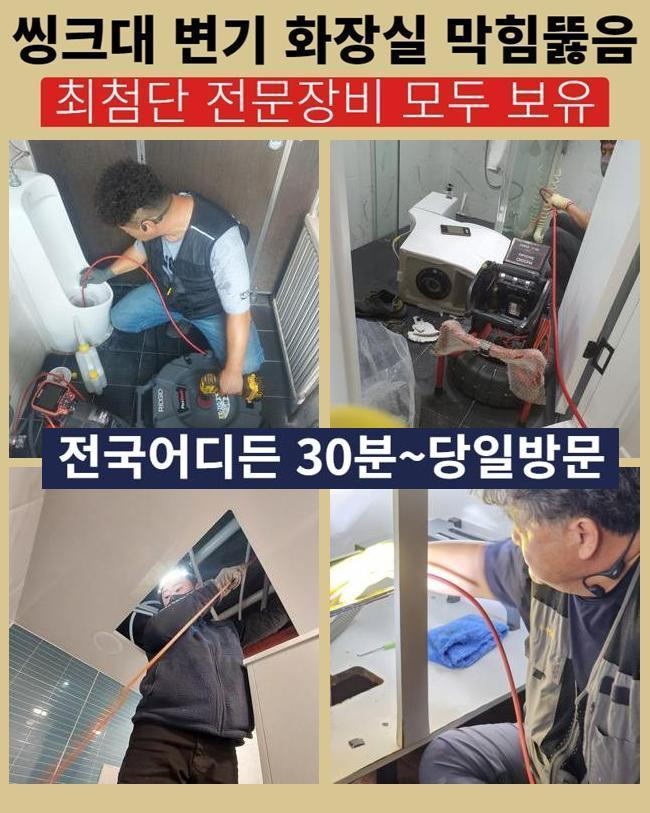
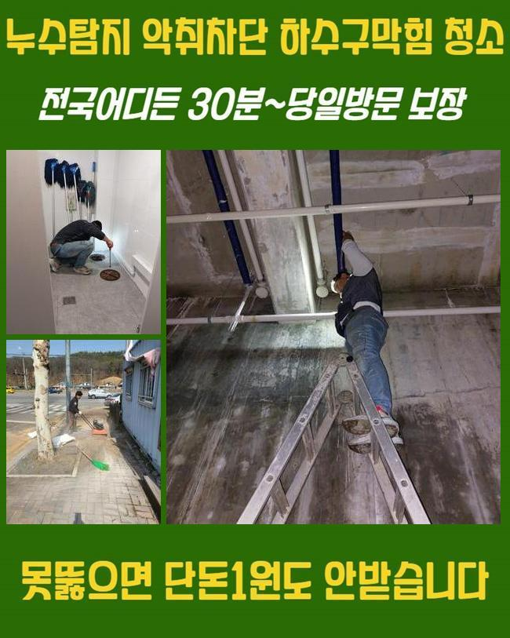
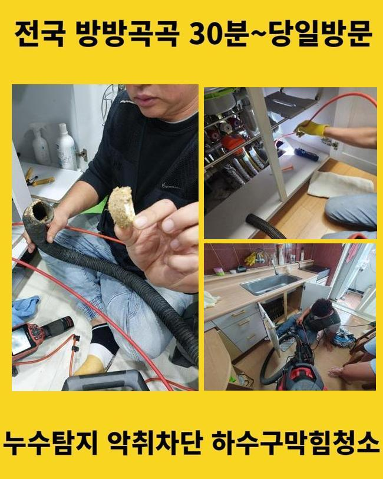
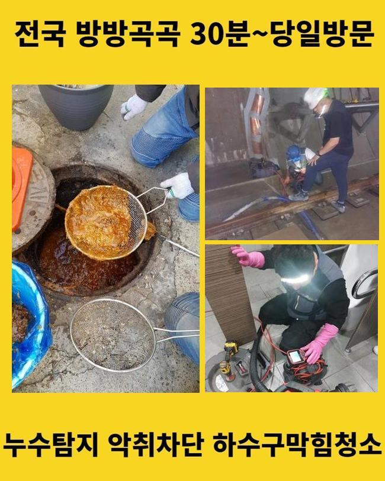
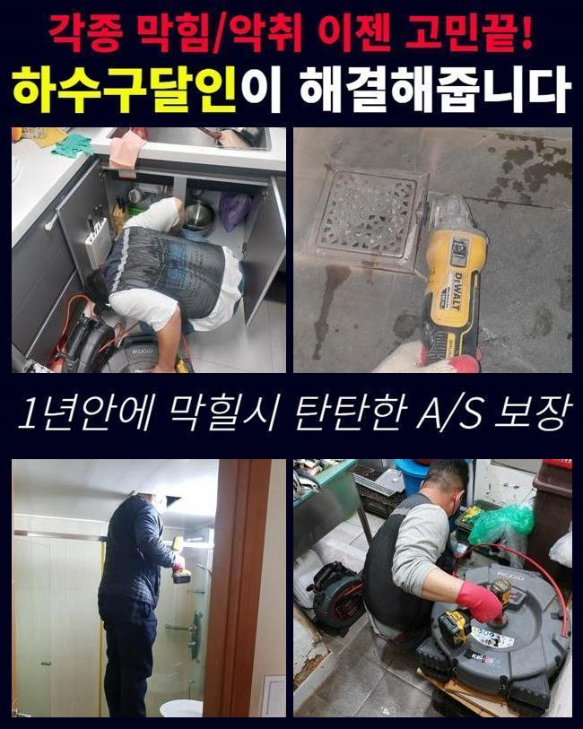

🏠 김제시 세면대역류 부안군 화장실하수구막힘
용인 하수구막힘 전문 시공 후기

📋 작업 개요
- 위치: 용인
- 서비스 유형: 하수구막힘, 배관막힘, 맨홀막힘, 누수수리, 역류해결, 뚫는업체, 배관청소, 고압세척, 설비공사
- 작업 일시: 2024. 11. 27. 9:57
- 업체명: 하수구수사대 (010-5615-2118)
🔍 문제 상황
김제시 세면대역류 부안군 화장실하수구막힘
배수구가 막히는 동기는 생각하시는 것보다 많죠
대부분은 기름슬러지나 음식물이 쌓이게되어 막힘을 유발하지만 그거말고도 타물질들이 혼합되어 물막힘이 생기기도해요
주방시설에 음식물쓰레기가 생겼다면 즉시 없애나가는게 저희가 지속적으로 강조해드리는 부분입니다
하지만 이를 항시 이행해나가기는 굉장히 힘들다고 볼수있어요
그렇기때문에 저희같은 사람들의 수리가 요구되는것이죠
작업과정에 요구되는 설비를 이용하여 근본적 원인을 신중히 탐색해나갑니다
저희가 그저께 내방한 곳은 주방 개수대의 역류증세로 인해 불편을 겪으시는 상황이었죠
동일한 사태가 여러차례 나타나서 그냥 놔두면 큰일나겠다는 마음으로 의뢰를 주신 케이스였죠
의뢰인께선 뜨거운물과 세제를 섞어 하수관에 부어보거나 유튜브를 통해 알아낸 방식을 감행하신적이 있다 하시네요
그러나 잠시 배수가 되었으며 며칠뒤에 트러블은 한층 심각해졌다고 토로하셨어요
그리하여 지속적으로 임기응변식으로 대처하다간 고장은 사라지지 않을거라 판단해서 저희에게 조력을 받으시는 방향으로 결정내리셨다고 합니다
저흰 일단 의뢰인의 해당 생각에 대하여 바르게 판단내리신 부분이라 말했어요
의뢰인께서 정리할수있는 부문은 한정적이며 시간의 흐름에따라서 사태가 나빠지기 때문이랍니다

🔎 원인 분석
💡 전문가 진단: 정밀 진단 장비를 사용하여 슬러지의 고착 여부를 판명하고 타격/세척 작업을 실시했습니다.
만약 그런 패턴을 유지하신다면 결국엔 아래층 거주자에게도 영향을 줄수 있답니다
저흰 보유한 장비들을 활용해서 조속히 막힘을 정리했는데요
플래시를 통해서 관로안을 비추니 예상대로 여러종류의 노폐물이 쌓여있는 상황이었습니다
이러한 양상이 결과론적으로 물흐름을 멈추도록 한거였죠
배관면에는 훼손된 부분이 나타나지않아 누적된 이물들을 처치하면 마무리지을수 있는 상황이었어요
저희의 업무성과를 확인하시도록 내시경기기로 관측한 모습들을 제시해드리며 시공내용을 세세히 알려드렸어요
배수통로를 가로막았던 노폐물들이 정결히 사라져버린걸 명확하게 직시할수 있었어요
저흰 타기술자가 처리못했거나 지속해서 역류 등이 표출되는 공간도 안가리고 방문드려요
현장상황이 힘들다고하여 그만두는 사태가 발생할일은 없으므로 편안하게 문의해주십시오
장비들을 정리하는 동안에 차로 10분거리의 고객님에게서 방문요청을 하셨는데요
의뢰자께서는 맨홀에서 물이 누설되어서 즉각 전화를 하셨다고 설명하셨죠
올해 초에 수리기사가 내방하여 뚫음시공을 하고 간적이 있었는데 몇달이 지난지금 재발한 상황이었어요
바로 해당 기술자에게 전화를 연결해보았지만 출장을 미루는듯한 느낌이들어 금번에는 포털사이트를 통해 검색해보시고 알아보신다음에 저희쪽으로 전화를 하셨다고 말하셨죠
즉각적으로 수리하시기를 원하셨기에 진단후 곧장 공정을 이행했습니다

🔧 작업 과정
근원적인 원인을 파악한뒤 그것에 합당한 방책을 찾아내려 1차로 내시경cctv를 집어넣고 관측해 보았어요
작업차량에 항시 구비된 고수압청소기를 활용하여 굳은 노폐물들을 세정하기로 계획했죠
100파이 사이즈의 중앙관은 가지배관을 세척할때처럼 압축스프링 기기로는 말끔하게 뚫리지 않아 재발할 여지가 꽤 높죠
그럴때는 여러가지 변인을 종합해서 생각해봐야 합니다
한두가지의 방책으로 누수증상이나 배관막힘에 접근하려한다면 사태의 중심요소를 찾아내지 못할 것이고 실패확률이 높아지겠죠
이현장에선 파이프내측을 고압청소기기로 소제하고 이물들을 남김없이 정리하는게 마땅하다는 결론이 나왔죠
하수관의 전반적 부분들을 한번에 정리했으므로 많은양의 찌꺼기가 배출되었죠
그것에 연이어서 제대로 뚫어졌는지도 빈틈없이 조사하였습니다
이후에 반복하여 내시경cctv를 넣어두고 관찰하였는데요
새제품으로 교체한것같은 상태로 변한 내부모습을 관찰할수 있었죠
말끔하게 청소가 종결되었기 때문에 차후 역류나 막힘이 생겨날 가망은 낮았습니다
하지만 고객께서 음식물쓰레기같은 이물질들을 무차별적으로 배관으로 흘려버린다면 갑작스레 역류증세가 생겨버리기도 한다는걸 안내드렸습니다
배관을 뚫을때 제일 먼저 체크해야할 부분은 정체의 이유를 명확히 집어내는 것이죠
그리고 종합하여 진단해보는 활동도 중요합니다
역류증상으로 찾아왔지만 누수증세가 일어났을수도 있으며 공용관로에 손상이 일어난걸 발굴할때도 많죠
그런 모습들을 찾았다면 즉각적으로 대응하여 2차적인 고장을 막아야합니다
상가가 밀집된 건물은 많은 사람이 드나들기에 예상치못한 사고가 나타날 가망성이 높아요
정례적인 관세척 과정이나 자발적인 관리를 바탕으로 설비관리를 하지않는다면 점진적으로 역류나 막힘 등이 나올수 있답니다
그렇기에 저흰 고객님들을 마주하면 합당한 관로보존방법과 정기적 서비스도 설명해드리죠
막힘의 경중을 떠나서 늘 배관내시경을 적용하면서 시작하는데요
하수관내부의 모습을 더욱 세밀하게 파악할수있고 그것을 통해서 시공시간을 절약해나갈수 있는거죠
저희측은 최신식 기기를 통해 수리를 진행하기에 실질적인 작업자는 숙련된 한명으로도 충분할때도 많아요


✅ 작업 완료
맨홀쪽의 역류증세가 나타나면 타설비쪽으로 트러블이 이어지게되는 상황이 나타날수가 있는데요
문제가 벌어진것을 확인하신 직후에 전화주신다면 한층더 합리적인 공사가 이어질 것입니다
수차례 고압물세척을 진행하고 파이프가 청결해졌다는걸 내시경카메라로 관측한다음에 마무리짓고 있답니다
평소에비해 배수가 힘겹게 이루어진다면 전화면담을 우선적으로 받아보시기를 바라요
내방전에 현장상황에 관한 소통과정을 이행하고 공사비용과 시공내용을 알려드리도록 할게요
관로막힘으로 해결이 필요하시다면 저희를 찾아주세요




⚠️ 베란다 누수 및 방수 관리 방법
- ✅ 비가 많이 올 때 창틀 주변이나 아래층 천장에 얼룩이 생기는지 정기적으로 확인해 보세요.
- ✅ 우수관 주변 실리콘 마감이 들뜨거나 깨진 틈새가 있는지 손상 여부를 수시로 체크하세요.
- ✅ 베란다 바닥 타일의 줄눈(메지)이 소실되면 그 틈으로 물이 침투하여 누수가 유발됩니다.
- ✅ 누수 의심 증상 발견 시 방치하면 아래층 손실이 커지므로 즉시 전문가의 진단을 받으십시오.
💡 핵심 정리
- 확실한 장비 작업(내시경 점검 및 샤프트 스케일링)으로 원인을 뿌리 뽑습니다.
- 작업 후 1년 이내에 동일한 부위 재발 시 100% 무상 A/S 서비스를 보장합니다.
- 서울 · 경기 · 인천 전 지역에 24시간 언제든 긴급 출동할 수 있도록 항시 대기 중입니다.
❓ 자주 묻는 질문 (FAQ)
🚨 용인 하수구막힘 문제로 고민이신가요?
정확한 원인 진단과 확실한 시공으로 재발 없는 해결을 약속드립니다.
24시간 긴급 출동 | 서울 · 경기 · 인천 전지역 | 1년 내 재발 시 무상 A/S